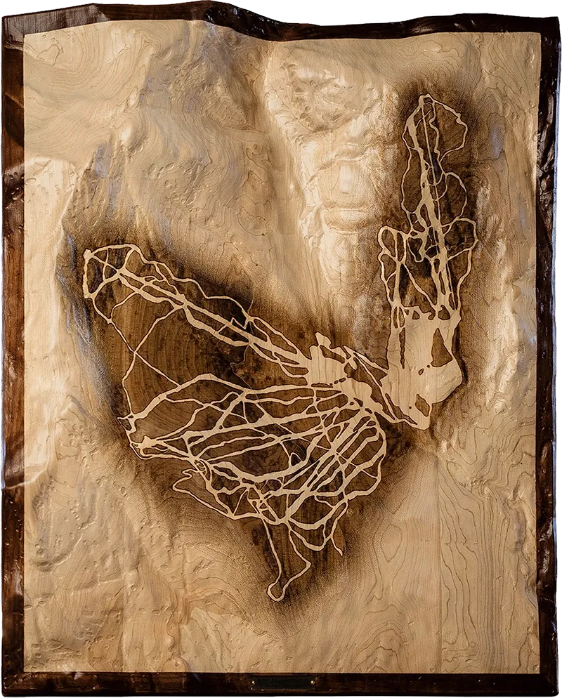

Mount Mansfield
Stowe, Vermont
Relief of Mount Mansfield, Vermont’s highest peak, carved in hardwood and showcasing the mountain’s long summit profile above Stowe. The carving follows the mountain’s summit structure, steep eastern face, and descending terrain. Laser-etched treelines mark the ski routes across the eastern face.
Shaping of Place
Mount Mansfield is part of Vermont's Green Mountains, a range shaped by ancient metamorphic rock, uplift, weathering, and glacial movement. Cambro-Ordovician schist gives the mountain a foundation measured in hundreds of millions of years. The summit rises to 4,393 feet, Vermont's highest point, with a long profile, steep eastern face, and valleys shaped by rock structure, erosion, and ice.
What makes Mansfield recognizable from a distance is the clarity of its structure. The long summit ridge holds orientation above Stowe, while shoulders, drainage lines, and steep eastern pitches organize the mountain's face. Ski terrain follows those existing grades and fall lines, with each route taking its logic from slope, exposure, and the larger order of the mountain.

Mount Mansfield relief, full composition.

Ridgeline-to-valley relief depth.

Laser-etched trail detail.
Mount Mansfield is recognizable from a distance through its long summit profile, scale, and presence above Stowe. That familiarity shaped the work. The challenge was staying true to scale while keeping the mountain’s proportions immediately clear in relief.
The carving was shaped to emphasize silhouette, gravity, and the steep eastern face. Trail etching was given enough contrast to orient the eye. The terrain remains visually primary.
The ski trails were treated as a human layer on the mountain, present for orientation and secondary to the summit profile itself.
Artist's Note